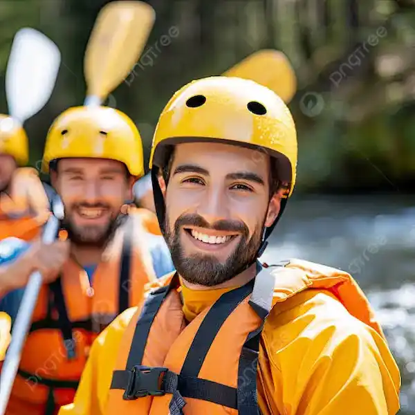

Somos uma empresa americana apaixonada por rafting e aventuras ao ar livre. Nossa missão é proporcionar experiências emocionantes, seguras e inesquecíveis em meio à natureza. Contamos com guias experientes, equipamentos adequados e muito entusiasmo para transformar cada descida em uma aventura especial para nossos clientes e suas famílias.
Descubra nossos passeios